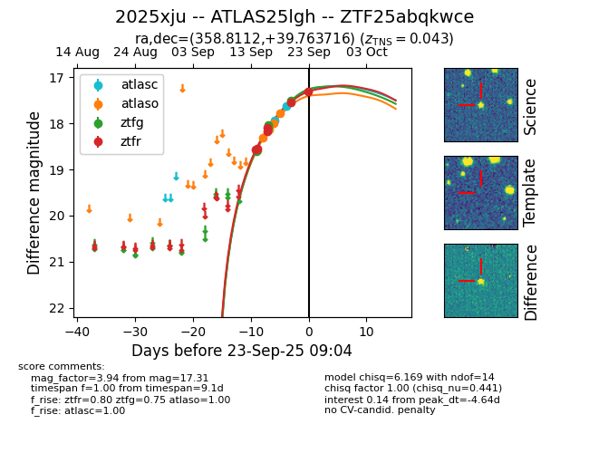
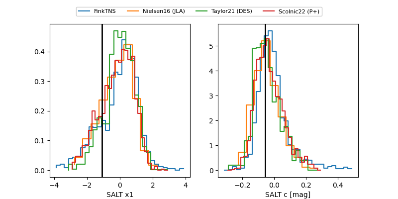

FINK: ZTF25abqkwce
Lasair: ZTF25abqkwce
ALeRCE: ZTF25abqkwce
TNS: 2025xju
YSE: 2025xju
ZTF25abqkwce (ztf,fink)
2025xju (tns,yse)
ATLAS25lgh (atlas)
equatorial (ra, dec) = (358.8112,+39.76372)
galactic (l, b) = (111.3354,-21.83932)


last atlasc=17.62, atlaso=17.78, ztfg=17.52, ztfr=17.31
2 atlasc, 5 atlaso, 5 ztfg, 6 ztfr detections